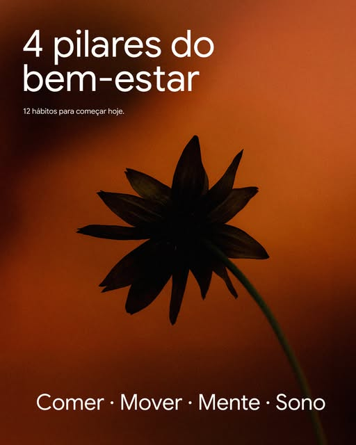
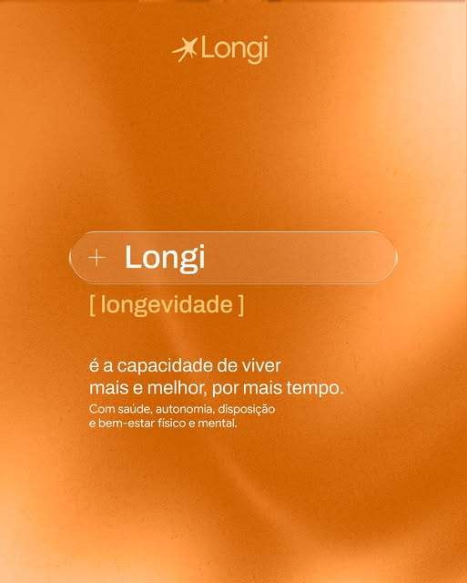
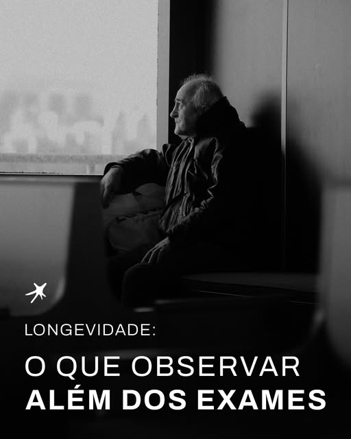

você disse isso na call. nos planos de saúde, exames são 68% dos procedimentos, e quase ninguém olha os resultados junto com a pessoa.
IESS, “saúde suplementar em movimento”, julho de 2026, com dados de 2025.
Weird Fishes AtelierNovembro, 2026
você pediu ajuda pra fazer a longi crescer sem recriar a marca.
“não é recriar a marca.”você, na call de 18 de novembro
e alguém pensando growth junto até a primeira contratação.
Weird Fishes AtelierNovembro, 2026
o diagnóstico é que a longi já tem boas peças, e o que falta é uma regra que junte todas elas.
a gente olhou o site, os 12 últimos posts e a nossa call.
Weird Fishes AtelierNovembro, 2026
o que a gente precisa fazer pra longi ter uma rodada bem-sucedida em janeiro.
a marca
limpar o brand book.
o instagram
conteúdo e growth de startup, sem influenciador no chute.
os assets
vídeos e fotos de gente usando a longi, sem ensaio.
a embalagem
a marca limpa no kit.
o site extra
um site novo, que vende o resultado.
Weird Fishes AtelierNovembro, 2026
as cores ficam, e duas cores quentes não vão mais uma em cima da outra.
creme#F8F6F2
branco#FFFFFF
vinho#4F0D0D
noite#390A0E
terra#792501
vermelho#A4343A
ouro#FFC680
tinta#272321
Longivinho no creme
Longivermelho no branco
Longiouro no vinho
Longicreme no terra
Longibranco na foto
Longilaranja no laranja
Longipêssego no pêssego
vale: claro no escuro, escuro no claro
sai, como no instagram de hoje
“uma coisa que eu odeio é tipo essa cor em cima dessa cor.” você, na call.
Weird Fishes AtelierNovembro, 2026
os últimos 12 posts já têm bons assuntos e boas fotos, e falta só uma regra visual em comum.



o fundomuda a cada post.
o títulomuda de lugar e de tamanho.
o símbolomuda de cor e de posição.
o post da perimenopausa fala direto com o seu público. a ideia é manter assuntos assim, com uma cara só.
@longi.br no instagram, posts de 10 de setembro a 24 de outubro de 2026.
Weird Fishes AtelierNovembro, 2026
o site já explica bem o produto, e três ajustes deixam ele pronto pra rodada.
“o mais fácil do mundo”
a rythm usa “world’s easiest blood test” como marca. a longi precisa de uma frase só dela.
a dose na vitrine
na home, as doses de ferro e vitamina d podem soar como prescrição. o lugar delas é dentro do app.
a cara de template
você mesmo disse “muito AI”. os cards arredondados e os passos de 01 a 05 dão lugar a elementos da longi.
Weird Fishes AtelierNovembro, 2026
a resposta é manter a marca que você já tem e fazer ela aparecer do mesmo jeito em todo lugar.
a marca fala do que vem depois do exame: mais energia, sono melhor, treino rendendo. o exame continua sendo o assunto, porque é ele que separa a longi de uma academia.
1no primeiro mês, a marca e o kit
2toda semana, posts e vídeos sobre o exame
3todo mês, um nicho novo de criadores
4em janeiro, visuais e números pra rodada
Weird Fishes AtelierNovembro, 2026
primeiro esboço
daqui pra frente é a nossa visão pra longi em 2027. tudo nas próximas telas é sugestão, pra construir junto com você.
longi, 2027
Weird Fishes AtelierNovembro, 2026
em 2027, a longi tem a mesma cara no post, no kit e no whatsapp.
o posttoda semana sai uma palavra do dicionário do exame.o kita caixa é creme com a tampa vinho, e o dispositivo vai dentro.o whatsappo plano continua no whatsapp entre uma coleta e outra.
a marca é a sua, organizada em três regras.
fala do que a pessoa quer, com o exame sempre à vista.
todo post traz um marcador ou um número.
cor, fonte e foto seguem o brand book.
peças das próximas telas; textos e números são exemplos.
Weird Fishes AtelierNovembro, 2026
COR
A proporção
Creme
Vinho
Branco
Terra
Vermelho
Ouro
Claro no escuro, escuro no claro. Nunca quente sobre quente.
LETRA
Archivo, com mono pros números
Aa
Seu resultado em 4 dias.TÍTULO 300
Colete em casa. O motoboy leva pro laboratório.TEXTO 400
FERRITINA 38 ng/mLDADO, MONO
aberta.UMA VEZ POR PEÇA
FOTO
Luz quente, gente no seu melhor
O dispositivo aparece sempre. Depoimento é sempre de gente de verdade.
VOZ E VIDRO
Seu resultado chegou. Vamos ver juntos o que mudou.
Fala como quem conversa, sem prometer cura e sem assustar.
O vidro fica no app.
VITAMINA D
34 ng/mL
Dentro da faixa. Próximo exame em março.
longi, 2027
o brand book
o brand book vira uma lista curta de regras.
cor, letra, foto e voz, que qualquer pessoa segue sem te perguntar.
a cor
as cores são as suas, agora com uma proporção definida.
creme no fundo, vinho como cor da marca e ouro só no detalhe.
a letra
a archivo continua, com uma mono só pros números.
o itálico com serifa do seu site aparece uma vez por peça.
a foto
as fotos mostram gente no seu melhor, com luz quente e o dispositivo sempre à vista.
o midjourney faz a cena e o gpt coloca o seu dispositivo. foto nova toda semana, sem ensaio.
a voz
a longi fala como alguém que acompanha a pessoa entre um exame e outro.
o vidro, que você curte, fica nos cards do app, como esse.
1 de 5
textos e números são exemplos.
Weird Fishes AtelierNovembro, 2026
dia 1: apertei o botão. foi isso.
dicionário do exame
ferritina
substantivo feminino
o estoque de ferro do corpo.
quando tá baixa, o treino pesa e o cansaço não passa.
o exame veio “normal”. normal comparado com quê?
achei que meu cansaço era só rotina. aí vi minha ferritina.
23:40●●● 5G ▮
‹L
Longionline
HOJE
posso treinar pesado com a ferritina baixa?23:40 ✓✓
Por enquanto, melhor não puxar no limite. Mandei seu resultado pro seu médico da Longi, ele te responde por aqui.Escrito por IA23:40
dia 2: o motoboy passou antes do almoço.
a perimenopausa pode começar enquanto você ainda menstrua.
comenta “exame” que a gente manda kits pra testar.
fiz o exame antes do pilates. o resultado veio no whatsapp.
longi, 2027
o instagram
quatro pilares de conteúdo que a gente sugere, pra fechar junto com você.
eles saem do que mais engaja em 19 marcas de saúde: o dispositivo num braço de verdade e criador em collab.
4 dias
a série dos 4 dias vira reel de celular, com uma legenda só.
cada pessoa filma o próprio dia, como a rythm faz.
o dicionário
toda semana, uma palavra do exame, feita pra salvar.
o formato vem do sallvecionário, da sallve.
a pergunta
as conversas do whatsapp entram como print de verdade.
o médico da longi aprova cada resposta antes de sair.
os criadores
os posts que mais rendem saem da conta de quem usou, em collab.
na beep, os reels de influenciadores passam de 13 mil curtidas.
1 de 5
nos reels, as fotos são referência. quem filma são pessoas de verdade.
Weird Fishes AtelierNovembro, 2026
ANTES DE COMEÇAR
Leva 5 minutos e dá pra fazer em casa.
Beba água, esquente o braço por um minuto e escolha a parte de cima, onde tem mais músculo.
INSTRUÇÕES DE USO COMPLETAS: TEXTO DA LONGI E DO LABORATÓRIO
ENVELOPE DE RETORNO
Volta pro laboratório.
Retirada grátis na sua porta. Resultado em até 4 dias, no app e no WhatsApp.

A CAIXA
ENCARTE
ENVELOPE
longi, 2027
o kit
o kit chega como um presente e volta com o motoboy.
caixa, encarte, etiquetas e envelope, em cima do seu primeiro rascunho.
a caixa
o unboxing costuma ser o primeiro post de quem recebe o kit.
creme com a tampa vinho. a foto já serve pro site antes de a caixa sair da gráfica.
o envelope
o encarte acalma antes da coleta, e o envelope leva a amostra de volta.
o texto obrigatório vem do laboratório.
1 de 3
textos de exemplo.
Weird Fishes AtelierNovembro, 2026
longisaude.appextra · R$8 mil
Longi em São Paulo. Primeiras vagas em dezembro. Entrar na fila
Como funcionaPreçoPerguntasQuero minha vaga
Exame de sangue em casa, sem fila.
Você aperta o botão no braço, o motoboy leva pro laboratório e um médico revisa o seu plano.
Quero minha vagaComo funciona
Coleta em 5 minutosno braço, em casa
Retirada na sua portade motoboy, sem custo
Plano revisado por médicoe as dúvidas no WhatsApp
LongiAssistente de IA. O plano é do seu médico.
Por que eu tô dormindo mal essa semana?
Vi no seu Whoop que você treinou depois das 21h em 3 dos últimos 5 dias. Seu plano tem uma rotina de sono pra isso. Quer que eu te lembre às 22h?ESCRITO POR IA
Quero. E o meu ferro?
Ele veio no limite baixo na última coleta. O seu médico deixou uma orientação no plano; quer que eu mostre?ESCRITO POR IA
longi, 2027
o site extra
construir o site novo é um extra, de R$8 mil, fora do valor mensal.
a home segue os melhores sites de exame: frase curta, foto de verdade, dispositivo à vista.
a home
a home começa com “exame de sangue em casa, sem fila.”
logo abaixo vêm o laboratório parceiro e o crm do médico.
o whatsapp
o assistente explica o plano e chama o médico quando é preciso.
ele nunca dá diagnóstico e avisa que é ia, como o cfm pede.
1 de 3
textos de exemplo.
Weird Fishes AtelierNovembro, 2026
O CLIPPING
Os melhores vídeos rodam de novo em perfis de corte.
fiz meu exame de sangue no chão da sala
a ferritina explicou o cansaço no treino
o motoboy buscou antes do pilates
Os vídeos que mais rendem viram cortes curtos. Quem corta recebe por visualização.
A CASCATA
Um criador pago puxa os outros do nicho.
dia 1
alguns dias depois
Um criador de corrida com bom engajamento posta sobre a Longi. Esse post é pago.
Três criadores menores que seguem ele recebem o kit de graça. Como ele já postou, eles querem postar também.
OS NICHOS DE CRIADORES
DezembroCorrida e pilates 35+
JaneiroHyrox, ciclismo e triatlo, junto com o app de atletas
FevereiroMenopausa, padel e tênis
longi, 2027
os criadores
a cascata de criadores, que foi ideia sua, leva a longi pra um nicho novo por mês.
o alcance deles enche a fila de espera do site.
o clipping
os melhores vídeos rodam de novo em perfis que cortam e repostam.
quem corta recebe por visualização, então a longi paga só pelo alcance real.
a cascata
em cada nicho, a longi paga um criador e manda o kit de graça pra três que seguem ele.
a ideia foi sua na call, em vez de pagar vinte influenciadores. a gente monta as listas, manda os kits e acompanha quem postou.
os nichos
cada mês entra um nicho de criadores.
o de janeiro sai junto com o app de atletas, parceiro da longi.
1 de 4
nichos e datas a confirmar com você.
Weird Fishes AtelierNovembro, 2026
a marca fica pronta em dezembro, e os visuais e os números pra rodada saem em janeiro.
dezembro
a marca
brand book e caixa prontos. o instagram volta, a fila de espera abre e entram os criadores de corrida e pilates.
até 15 de janeiro
o site e o deck
o copy novo entra no ar, e as fotos e o vídeo do produto ficam prontos pro deck.
26 de janeiro
os números
uma página com o crescimento da fila e do instagram, pronta pro investidor.
fevereiro
o relatório
o clipping começa e sai o relatório dos três meses.
toda semana a gente acompanha a fila de espera, o custo de cada pessoa que entra e o alcance de cada nicho.
Weird Fishes AtelierNovembro, 2026
em três meses, a gente entrega pelo menos isso.
44posts e carrosséis
30vídeos curtos
10vídeos ugc com clientes
70imagens
3filmes de produto
uma vez
o brand book limpo
a embalagem do kit, pronta pra gráfica
o copy do site
os playbooks de criadores e de clipping
todo mês
assets ilimitados, um pedido por vez
o instagram e o tiktok
uma call de growth por semana
um relatório por mês
extras
o site novo: R$8 mil
mídia paga e cachê de criadores
ensaio real e deck da rodada
esses números são o mínimo.
Weird Fishes AtelierNovembro, 2026
o trabalho tem um valor fixo por mês.
por mês
R$10.000
mínimo de três meses, pago no início de cada mês.
os três meses à vista
R$28.500
5% a menos, pago na assinatura.
o mesmo escopo, com agências médias de são pauloR$39 mil por mês
o mesmo escopo, com freelancersR$19 mil por mês
um growth marketer clt, sem design nem produçãoR$11 a 22 mil por mês
weird fishesR$10 mil por mês
extrao site novodesenho e construçãoR$8.000uma vez, fora do valor mensal
criadores e mídia também ficam fora do valor, de uns R$10 mil a R$25–50 mil, e a gente sugere começar pequeno e crescer depois da rodada.
preços de são paulo em 2026; salários do guia robert half 2026, com encargos. depois dos três meses, o contrato segue mês a mês, com 30 dias de aviso.
Weird Fishes AtelierNovembro, 2026
cada parte do trabalho tem um responsável.
weird fishes
faz a marca, a embalagem, o copy, o conteúdo, os criadores e o relatório, e revisa tudo antes de sair. os arquivos são da longi.
você
aprova o brand book e cada leva de posts, e responde às dms.
o médico da longi
aprova tudo o que fala de saúde.
o laboratório
escreve o texto obrigatório e as instruções de uso.
o orçamento à parte
mídia, cachê de criadores, frete, clipping e impressão, pagos direto aos fornecedores.
extras
o site novo, por R$8 mil, e o ensaio real e o deck da rodada.
depois de fevereiro
mês a mês. quem você contratar pra growth recebe os playbooks.
Weird Fishes AtelierNovembro, 2026
noise°
o instagram de uma empresa de cripto, feito como revista de cultura. foi de 400 a 17 mil seguidores.
as fotos de gente com a longi nesta proposta saíram do midjourney e do gpt, no mesmo dia do texto.
Weird Fishes AtelierNovembro, 2026
o próximo passo é escolher uma data de início.
primeiro
você escolhe a data e a forma de pagar. começando até 8 de dezembro, a marca fica pronta ainda em dezembro.
na primeira semana
a gente revisa o brand book, e os posts saem depois da sua aprovação.
até 15 de janeiro
o copy do site novo e os visuais da rodada ficam prontos.
fevereiro
sai o relatório dos três meses.
joão passarelli, weird fishes atelier. é só responder no nosso grupo do whatsapp. wfishes.com
Weird Fishes AtelierNovembro, 2026
a verdade é:
o paulistano já cuida da saúde do jeito dele: corre no ibirapuera, faz pilates e toma suplemento.mas exame de sangue ele só faz quando o médico pede, e nunca sabe o que fazer depois.com a longi, ele acompanha o corpo por dentro o ano inteiro, sabe o que está funcionando e se prepara pra chegar aos 80 ainda correndo no ibirapuera.e isso pode ser tão normal quanto pedir um iFood.